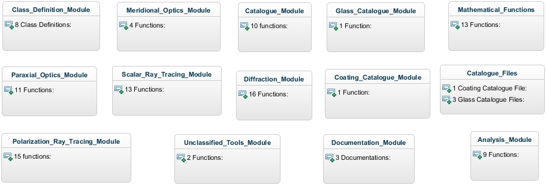

The toolbox is written using object oriented programming approach. So the main part of the toolbox will be the class definitions with all member properties and methods. The following is the high level class diagram showing the classes used in the toolbox together with their interconnections.
Here is the block diagram showing all modules and number of functions in each module of the toolbox.

Created with the Personal Edition of HelpNDoc: Free help authoring environment